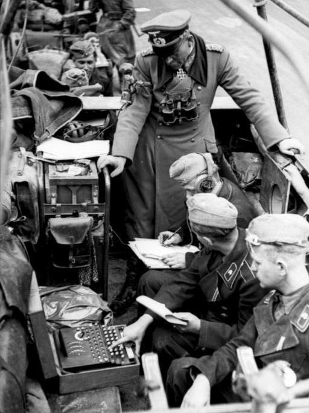
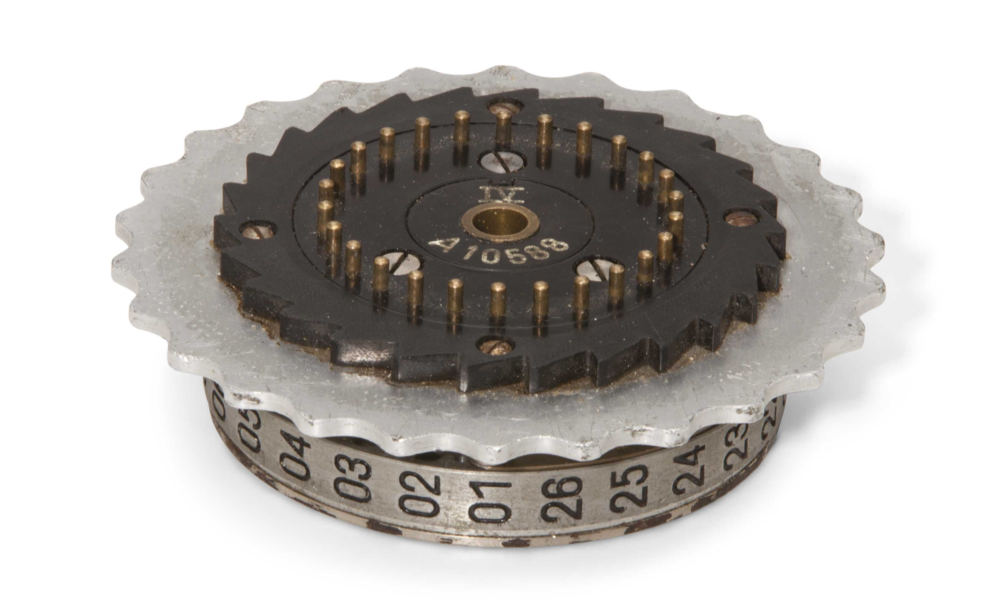
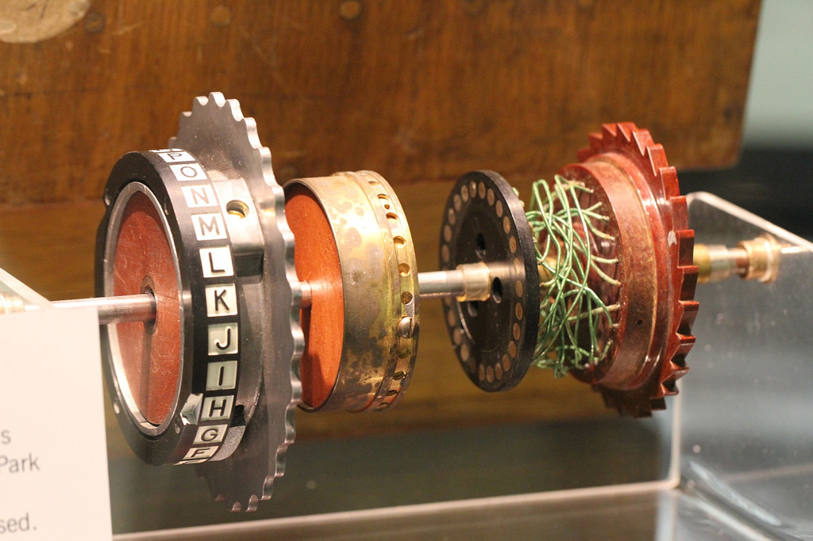
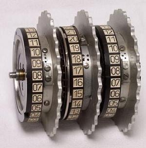
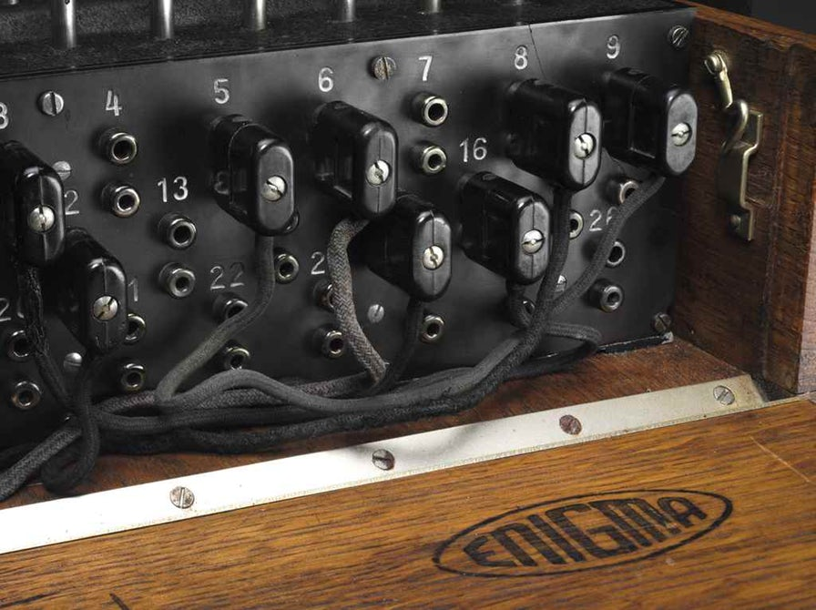

The Enigma
{kind=link}
It's 1939. We're military commanders, and we need to send orders to our units in the field. We want to use radio for this, since radio is practically instantaneous and can reach all of our planes, tanks, ships, and submarines, almost anywhere on the globe. Unfortunately, there's a big problem with radio: Anyone can hear what we send on it.
The solution is to use some kind of code, known only to our military and no one else's. The simplest code we could use is a simple substitution cipher. You've probably used this cipher before. It just takes each letter of the alphabet and maps it to different letter.
To keep things simple, let's imagine that our alphabet has only four letters: A, B, C, and D. Our substitution cipher maps each "plaintext" letter to a different "ciphertext" letter, shown in the table below. To encode a message, we just change all the letters. For example, "ABCD ABCD" becomes "CADB CADB". Decoding is equally easy — we just use the same mapping but in reverse.
| Plaintext | Ciphertext |
|---|---|
| A | C |
| B | A |
| C | D |
| D | B |
To speed up the process of encoding and decoding, and to allow any of our radio operators to do it without memorization, we decide to design a simple machine that encodes messages for us. Then we'll build a bunch of these machines and distribute them throughout our armed forces. I know what you're thinking — Memorizing a four-character code is trivial, and even a 26-character code could be memorized with an hour or two of practice. Why are we building machines for this? We'll see in a minute that for this code to be secure, we're going to have to make it a lot more complicated, and having a machine do the work for us will be essential.
For now, our machine consists of a keyboard, some internal wiring, and a lightboard, with one light for each letter. When you press a key on the keyboard, it completes a circuit which lights up one of the lights on the lightboard. The wiring scrambles the letter using the mapping above, so the letter that lights up is the encoded letter. Then we write the encoded letter down, or transmit it over radio (probably with Morse code). For example, try encoding "cab" with the simulator below. To make it easier to see what's going on, I'm highlighting the circuit that's made when you press a key, so you can follow the letter through the wiring and into the lightboard on the right.
One problem with our machine is that it only encrypts messages. We need to update it to be able to decrypt messages as well. There are a lot of ways to solve this, and the real Enigma solved it with a component called a reflector. The reflector took the output from the wiring and "reflected" it back into the wiring as a different letter. The result is that entering the ciphertext outputs the original plaintext on the same machine. Give it a try: Enter something as plaintext (e.g. "ABCD"), make a note of the ciphertext, click Reset, and then enter the ciphertext. You'll get the original plaintext back again.
To simplify the visualization, I've moved the lightboard over to the left, and I'm showing both the input and output letters on the lightboard. It's not important right now, but this is actually more accurate from a wiring perspective, since in the real Enigma, the keyboard and lightboard can't intersect and highlight the same letter.
Of course, there's a bigger problem here. Simple substitution ciphers are extremely easy to break. Because the same input letter always maps to the same output letter, someone trying to crack the code can use frequency analysis to guess the mapping. For example, we know that it regular English text, the most common letter is E, followed by T, then A, and so on. Given a ciphertext, a codebreaker could write down how often each encrypted character appeared in the text, and then make a guess that the most frequent of those characters is actually E, the second most common is T, etc. Given enough text, after some trial and error they'd have all our messages decoded.
How do we solve this problem? Well, one way to make it harder is to change the mapping with every letter. For example, let's extend the cipher we made above into four different ciphers. For the first letter in our plaintext, we'll use the first cipher, for the second letter, the second cipher, and so on, looping back to the first after every fourth letter.
| Plaintext | Ciphertext 1 | Ciphertext 2 | Ciphertext 3 | Ciphertext 4 |
|---|---|---|---|---|
| A | C | A | D | B |
| B | A | D | B | C |
| C | D | B | C | A |
| D | B | C | A | D |
Now "ABCD" becomes "CDCD", and "AAAA" becomes "CADB". This is interesting, isn't it? Two different letters in our plaintext can map to the same letter in the ciphertext, and the same letter repeated in the plaintext can map to four different letters in the ciphertext. This updated code is called a polyalphabetic cipher, and it makes frequency analysis a bit harder (not hard enough, but we're getting there).
So, how do we update our machine to change the encoding with every letter? Rather than having a fixed set of wires between the keyboard and the lightboard, we'll put those wires inside a wheel called a rotor. The rotor is literally just a gear with wires inside it which scramble the inputs to different outputs. It rotates one step with every keypress, and as a result, changes the mapping from keys to lights. After a full rotation of the rotor, it's back in its starting position.
 To visualize it in 2D in our simulator below, imagine cutting the rotor open and unrolling it so that it's flat. The indicator above the rotor shows you which position it's in, and also lets you change the rotor's starting position. Each time you click on the indicator, or alternatively with every keypress, the rotor in the real machine rotates one step, and the wires in our 2D unwrapped view shift up one step. If a wire would shift up past the top of our 2D rotor, it wraps around to the bottom of the rotor.
Unfortunately, a polyalphabetic cipher as simple as the one above isn't much harder to break than the substitution cipher that we started with. You can split the ciphertext into four sets of letters (one per rotor position) and do frequency analysis on each set, eventually figuring out the four ciphers that make up the code.
Of course, if anyone managed to steal or build a copy of one of our machines, they wouldn't have to bother with frequency analysis! They could just brute force a solution by putting the single rotor in each of its four possible starting positions and start entering the ciphertext for each one, stopping when they got an understandable output. This is easy even with a 26-letter alphabet.
Somehow we need to make frequency analysis and brute force impractical. This means we need a lot more ciphers, more than just one per rotor position. How can we do this? We can add more rotors, and make each rotor rotate at a different rate. Just like the odometer in a car, the first rotor rotates one step with every keypress, the second rotates once with every full revolution of the first rotor, and the third rotates once with every full revolution of the second rotor. (Technically there's a phenomenon called "double stepping" where the second rotor can rotate twice in a row, but that won't cause serious security problems.)
Each keypress results in a new set of rotor positions, so the cipher we use is different for every letter and doesn't repeat until we've typed 43 letters. Obviously for our tiny four letter alphabet this is a pretty small number - only 64 possible configurations. For a real alphabet with 26 letters it's much larger, 263 or 17,576 configurations.
Remember that in order to decode a message, we need to put the machine in the same starting configuration as the one used by the sender. To make sure that everyone's using the same settings, we'll make a code book with a randomly chosen setting for each day of the month, and then distribute a copy of that code book along with an Enigma to everyone who needs to send and receive messages. Since the code books are just paper, they're easy to destroy if it looks like you're about to be captured.
Since we use different settings for each day, someone trying to break our code has to break it in less than a day. If it takes them longer than that, they'll eventually decode our old messages, but they won't be able to decode the new messages that we're sending in real time. Older intelligence about places we've already been isn't as useful as intelligence about where we're going.
Back to our 17,576 possible configurations. If you're trying to break the code, maybe that's too many configurations for a person to try by hand, but you could probably build a machine to automate the process. After all, if your machine only spends two seconds typing, say, the first ten letters of the encrypted message for each configuration (enough letters for you to tell if you're on the right track or not when reading over the results later), you could try all possible rotor configurations in only 2 * 263 seconds, or about 10 hours. That gives you 14 more hours worth of real-time intelligence on the latest locations and orders for all of our subs, planes, tanks, etc. Not good.
This means we have to add even more possible configurations to our machine. Instead of three fixed rotors, we'll choose three rotors from a set of five, and those three rotors can be arranged in any order. That brings the total number of configurations to (5! / (5 - 3)!) * 263 = 1,054,560.
Again, this seems like a lot, but the Allies have a lot of clever mathematicians, and they could probably build an array of machines to brute force the code in parallel. So, just to make life harder for them, we'll add one more component called a plugboard. The plugboard lets us connect any two letters with a wire, so that for both encoding and decoding, those letters become swapped. We can connect any number of pairs of letters, from 0 to 2 in our tiny alphabet example, or from 0 to 13 in a real alphabet. (The real Engima had 10 available plugs.)
The amount of security added by the plugboard is, well, staggering. With 10 pairs of letters connected (for a 26 letter alphabet), the plugboard has 150,738,274,937,250 possible states (see here for a derivation), making the total number of configurations in our Enigma around 15 billion billion. For 1940's era technology, this is way too many configurations to try with brute force and finish within the same day.
Enough with the 4-letter toy examples. Here's a complete 26-letter enigma. See if you can decode this message:
Starting rotor positions: 2 3 17
Plugboard pairs: AF, BR, GL, NO, UY
Ciphertext: EXOYMPWDYAIBZQWUWKPJGXMHLPWI
At its heart, the Enigma is just a big circuit, which changes its wiring with every keypress. The Germans thought it was unbreakable, but of course, we wouldn't be telling this story if the Allies hadn't broken the code. It turns out that both the Enigma itself - and the procedures around how it was used - are flawed, and these flaws let you narrow down those 15 billion billion settings to a much smaller set that can be quickly brute forced. More on that story another time.
Sources
- Numberphile has an excellent video demonstrating how a real Enigma works.
- Enigma Machine on Wikipedia
- Enigma emulator that inspired some parts of the design of the simulators here.
- Source for the header photo.